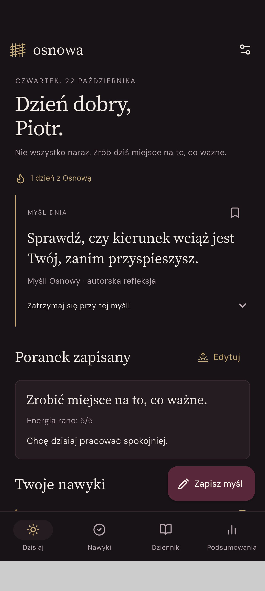

Rano złap kierunek.
Zapisz energię, krótką refleksję i intencję. Nie musisz planować każdej minuty.
Nawyki i dziennik · Android
Zatrzymaj myśl. Zadbaj o nawyk. Zachowaj wspomnienie. Osnowa łączy je w spokojną przestrzeń, do której wracasz każdego dnia.

Trochę więcej miejsca dla siebie.Od poranka do wieczora
Zapisz energię, krótką refleksję i intencję. Nie musisz planować każdej minuty.
Własne nawyki, kolory i dni tygodnia. Przypomnienia, historia oraz archiwum, gdy potrzebujesz przerwy.
Szybka myśl w ciągu dnia i jedno zdjęcie na pamiątkę. Wieczorem dopisz, jak się czujesz.
Wybierz datę w kalendarzu i wróć do wpisów, zdjęcia, nawyków oraz wydarzeń. Podsumowania pomagają dostrzec powtarzające się wzorce.
Z działającej aplikacji
Zrzuty wersji testowej z przykładowymi danymi. Dotknij ekranu, aby zobaczyć go w pełnym rozmiarze.
Osobiste znaczy Twoje
Wpisy i zdjęcia pozostają lokalnie w aplikacji. Możesz włączyć blokadę za pomocą zabezpieczeń telefonu i utworzyć kopię zapasową chronioną hasłem. Wersja testowa nie wymaga konta i nie zawiera reklam.
Pamiętaj o własnej kopii zapasowej przed zmianą telefonu lub odinstalowaniem aplikacji.
Dopracowujemy pierwszą wersję
Aplikacja jest obecnie w testach na Androidzie. Nie jest jeszcze dostępna w Google Play. Chcesz podzielić się pomysłem lub zapytać o projekt? Napisz do nas.
apscento@gmail.com ↗